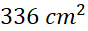
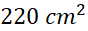
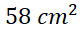

1. Diketahui segitiga sama kaki mempunyai sisi alas 4 cm dan panjang sisi kaki 60 cm. Berapakah keliling segitiga sama kaki?
2. Luas sebuah segitiga adalah  dan panjang alasnya 24 cm. Berapakah tinggi segitiga tersebut?
3. Luas Sebuah Segitiga  dan tingginya 40 cm. Berapakah alas segitiga tersebut?
4. Sebuah segitiga sama sisi dengan ketiga sisinya 45 cm, Berapakah keliling segitiga sama sisi?
5. Panjang alas suatu segitiga adalah 22 cm dan tingginya 6 cm. Luas segitiga itu adalah?
6. Sebuah meja berbentuk segitiga sama sisi dengan panjang sisinya 1,5 meter. Di sekeliling meja dihiasi mawar flanel yang berjarak 6 cm antara satu dan yang lainnya. Banyaknya mawar flanel pada meja tersebut ada?
7. Kebun Pak Saki berbentuk segitiga dengan panjang tiap sisi adalah 4 m, 8 m, dan 12 m. Di sekeliling kebun tersebut akan dipasang pagar dengan biaya Rp 65.000,00 per meter. Berapakah biaya yang diperlukan untuk pemasangan pagar kebun Pak saki?
8. Diketahui segitiga ABC siku-siku di B. Jika luas segitiga ABC dan panjang AB = 12 cm, maka panjang BC adalah? cm.
9. Sebuah segitiga sama kaki dengan panjang sisi yang sama 65 cm dan tingginya 15 cm. Hitunglah luasnya!
10. Sebuah wadah udang berbentuk segitiga sama sisi dengan panjang sisinya 16 meter. Tambak tersebut akan dikelilingi pagar kawat 4 tingkat. Berapa meter kawat yang dibutuhkan?